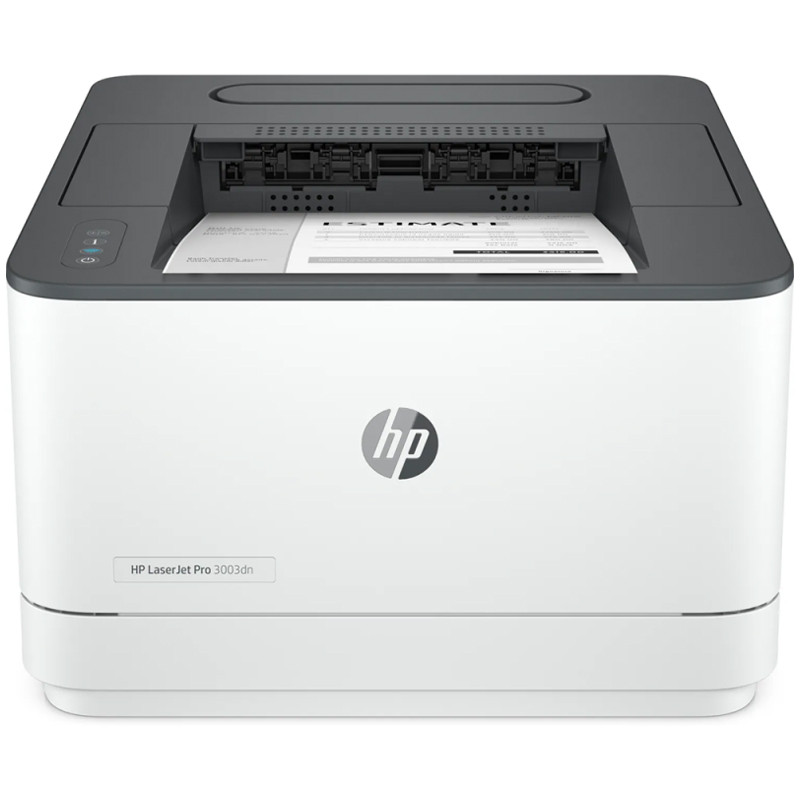

On peut classer les imprimantes selon la technique d'impression :
On distingue alors 3 types :
Matricielle jet d'encre Laser| Imrimante matricielle(imprimante à aiguille, imprimante à impact ) | Permet d'imprimer des documents sur le papier grace à un "va et viens" d'un chariot comportant une tête d'impression | |
| Imrimante à jet d'encre(Bubbles et printers ) | a été originalement inventé par Canon, elle repose sur le principe qu'un fluide chauffé produit des bulles | |
| Imrimante Laser |  |
permet d'obtenir des tirages papier de qualité, à faible coût et avec vitesse d'impression élevée.En revanche le coût d'acquisition d'une telle imprimante la reserve à des usages semi professionnels ou professionnels . |